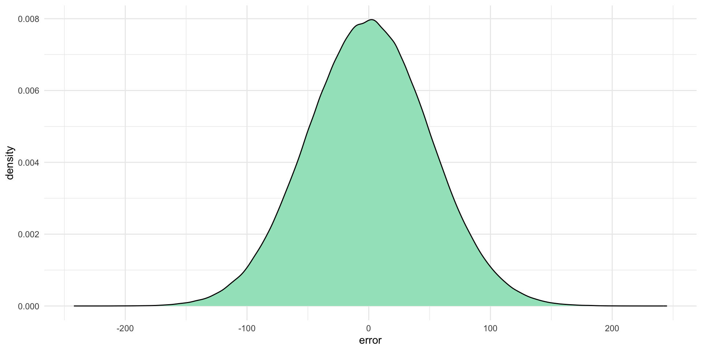
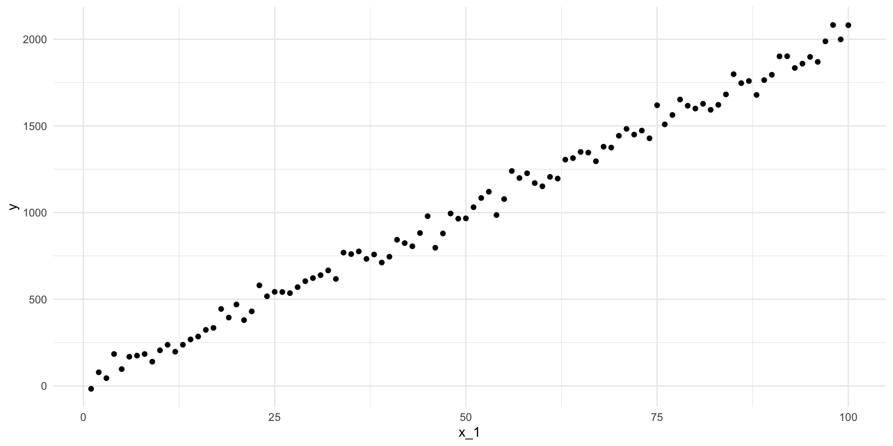
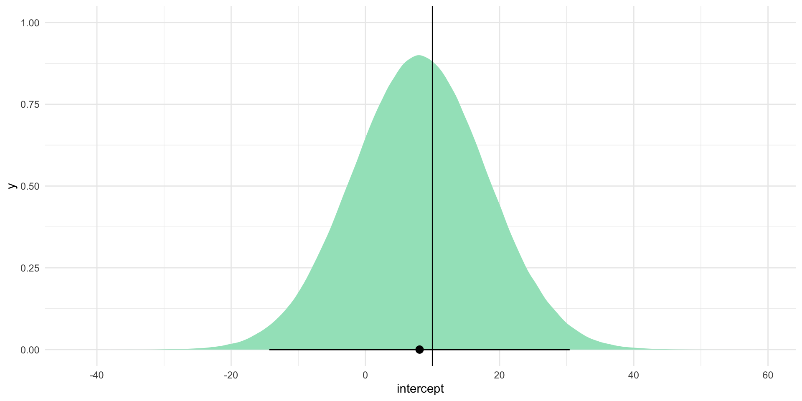
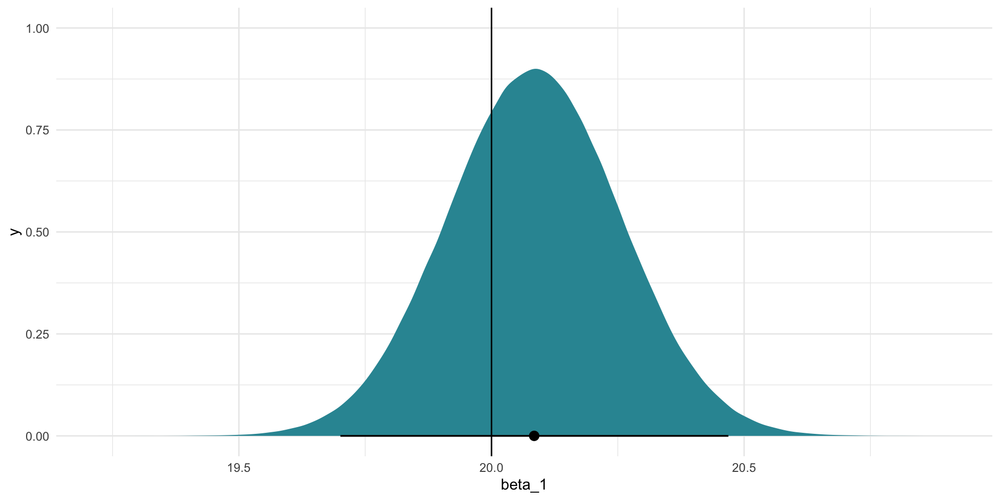
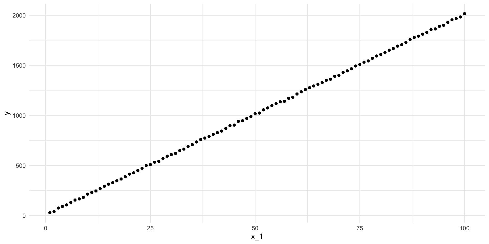
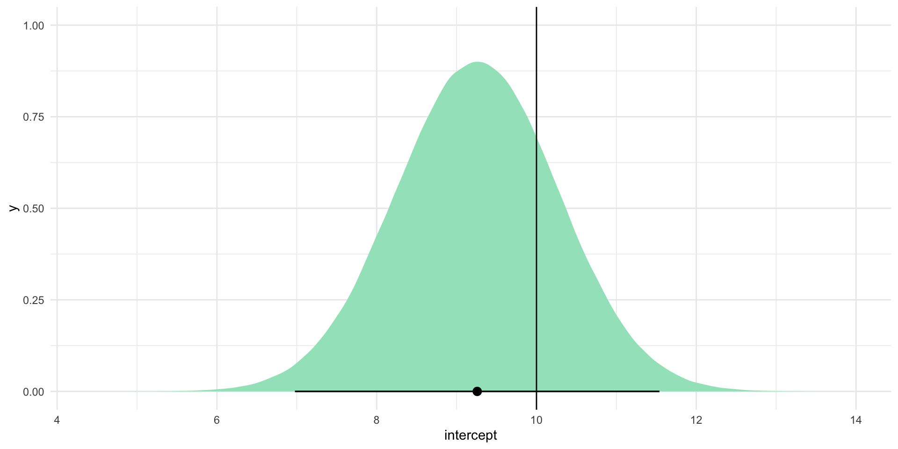

library(tidyverse)
library(broom)
library(ggdist)
library(poliscidata)
library(modelsummary)OLS Basics
Warning
THIS IS A DRAFT.
Packages
set.seed(1234)Regression models
This week we are going to continue to look at how we can model the distribution of our outcome of interest using a single predictor.
Here’s the general formula for a linear regression model with a single predictor:
\[ Y = \beta_0 + \beta_1X_1 + \epsilon \]
Let’s work backwards to help build our intuition for this model. Let’s start with a modeled relationship between some outcome, \(Y\), and a predictor, \(X_1\):
\[ Y = 10 + 20X_1 + \epsilon \]
Think of this as the true relationship between \(Y\) and \(X_1\).
Note
Out there in the real world we use modeling to attempt to find this true relationship. If only we had access to it!
Random error
This equation has two unknown variables: \(X_1\) and \(\epsilon\). You need both to be able to calculate the corresponding values for \(Y\).
\(X_1\) will in many ways be more intuitive for you. Generally, it represents some vector of values that representing something tangible: perhaps it’s a person’s age, a country’s GDP, or a binary value telling you whether or not a country is a democracy. The error term can be a bit more abstract, so let’s take a minute to look at it more closely.
Note
A quick note on notation! Generally, we will use capital letters (for example, \(Y\) and \(X_1\)) to denote vectors and lower case letters (for example, \(y\) and \(x_1\)) to denote single values (usually with another subscript telling us the observation to which that single value belongs).
What is a vector? Here, I mean a series of values. In other words, it is a fancy term for some variable. The term comes from matrix algebra. A matrix with only one row or column is referred to as a vector. Think of it simply as one column (variable) or one row (unit of observation) of a dataframe.
For example, if our outcome of interest is whether or not an individual will vote in the next election, we might use data on whether or not survey respondents voted in the last election to study the predictors of voting. In this case, our vector \(Y\) will be a series of 1s and 0s describing whether or not each survey respondent voted in the last election.
The error term; on the other hand, is a set of random values. It captures all of the random things that inevitably muddy the relationship between our outcomes of interest and our predictors in the real world.
We can learn some useful things about the random error effecting our outcome of interest. For example, let’s say that the error in this true relationship is normally distributed with a mean of zero and a standard deviation of 50. In other words, there is some random noise in our data: \(Y\) does not always precisely equal \(10 + 20X_1\). Some random value will always be added to \(10 + 20X_1\). That value will be drawn randomly from this distribution:
ggplot(tibble(error = rnorm(1e6, mean = 0, sd = 50)), aes(x = error)) +
geom_density(fill = "#A2E3C4") +
theme_minimal()
The coloured area under that curve represents the probability that the corresponding error value (along the \(x\)-axis) will be drawn. This means that each error value randomly drawn is most likely to be a number around zero (where the curve peaks). It is very unlikely to be a number bigger than around 150 or smaller than around -150.
Notably, this error value is completely independent of \(X_1\) and \(Y\) (you don’t need these values to work out your error value). To demonstrate, let’s draw some of those random error values from this distribution:
rnorm(1, mean = 0, sd = 50)[1] -47.37963rnorm(1, mean = 0, sd = 50)[1] -84.53445rnorm(1, mean = 0, sd = 50)[1] -28.83643
Note
This semester we will talk a lot about the assumptions you are required to make when you fit a linear regression model. These include some assumptions about error, including its shape and uniformity.
Fitting our regression model
Let’s make \(X_1\) equal all the whole numbers between one and 100. We can take this vector and our random error and find 100 values of \(Y\):
x_1 <- 1:100
error <- rnorm(100, mean = 0, sd = 50)
df <- tibble(x_1 = x_1,
y = 10 + 20*x_1 + error)
df# A tibble: 100 × 2
x_1 y
<int> <dbl>
1 1 -17.0
2 2 78.2
3 3 44.3
4 4 184.
5 5 96.6
6 6 168.
7 7 174.
8 8 184.
9 9 139.
10 10 205.
# ℹ 90 more rowsLet’s plot those:
ggplot(df, aes(x = x_1, y = y)) +
geom_point() +
theme_minimal()
What is the line-of-best-fit? In other words, what is the line that minimizes the distance between itself and all of these points?
m <- lm(y ~ x_1, data = df)
summary(m)
Call:
lm(formula = y ~ x_1, data = df)
Residuals:
Min 1Q Median 3Q Max
-135.372 -28.844 -1.649 31.502 109.694
Coefficients:
Estimate Std. Error t value Pr(>|t|)
(Intercept) 8.0917 9.9769 0.811 0.419
x_1 20.0844 0.1715 117.098 <2e-16 ***
---
Signif. codes: 0 '***' 0.001 '**' 0.01 '*' 0.05 '.' 0.1 ' ' 1
Residual standard error: 49.51 on 98 degrees of freedom
Multiple R-squared: 0.9929, Adjusted R-squared: 0.9928
F-statistic: 1.371e+04 on 1 and 98 DF, p-value: < 2.2e-16Hmm, it’s different from the true relationship. It’s this:
\[ Y = 8.09 + 20.08X_1 + \epsilon \]
Instead of this:
\[ Y = 10 + 20X_1 + \epsilon \]
This is despite the fact that we set everything up according to the true relationship between \(Y\) and \(X_1\)!
Why is it different? The long and short answer is: that pesky random error!
Random error will always exist. That’s okay. That’s why we built it into our true relationship. We have some statistical tools to help us deal out.
Looking back at our model’s output we can see that we are provided with a lot of information about its uncertainty in those coefficient estimates.
tidy(m)# A tibble: 2 × 5
term estimate std.error statistic p.value
<chr> <dbl> <dbl> <dbl> <dbl>
1 (Intercept) 8.09 9.98 0.811 4.19e- 1
2 x_1 20.1 0.172 117. 4.05e-107In addition to our coefficient estimates (estimate), we also have access to each estimate’s standard error (std.error), t-statistic (statistic), and p-value (p.value). Let’s focus on the standard error. We can use this to work out all of the plausible alternative coefficient estimates that our model could have found if that random error had been different. Let’s take a look at those plausible alternatives to see whether the true relationship (\(\beta_0 = 10\) and \(\beta_1 = 20\)) is sitting in there.
Let’s start with the intercept. Centering our plausible set of intercept estimates on our model’s best guess - 8.09 - let’s simulate those alternative estimates using our uncertainty (the intercept coefficient’s standard error) and see where the “true” intercept estimate (represented by the black line on the graph below) sits within this context:
intercept_est <- tidy(m) |>
filter(term == "(Intercept)") |>
pull(estimate)
intercept_est[1] 8.091687intercept_se <- tidy(m) |>
filter(term == "(Intercept)") |>
pull(std.error)
intercept_se[1] 9.976851tibble(intercept = rnorm(1e6, mean = intercept_est, sd = intercept_se)) |>
ggplot(aes(x = intercept)) +
stat_halfeye(.width = c(0.025, 0.975), fill = "#A2E3C4") +
geom_vline(xintercept = 10) +
theme_minimal()
Note
I expect these plausible alternative coefficients to be normally distributed. For a simulated proof of why we can assume this, please check out the Regression notes from GVPT622.
We can do the same for our model’s best guess of \(\beta_1\):
beta_1_est <- tidy(m) |>
filter(term == "x_1") |>
pull(estimate)
beta_1_est[1] 20.08444beta_1_se <- tidy(m) |>
filter(term == "x_1") |>
pull(std.error)
beta_1_se[1] 0.1715183tibble(beta_1 = rnorm(1e6, mean = beta_1_est, sd = beta_1_se)) |>
ggplot(aes(x = beta_1)) +
stat_halfeye(.width = c(0.025, 0.975), fill = "#3095A2") +
geom_vline(xintercept = 20) +
theme_minimal()
Often in political science we are required to accept that the true estimates sit somewhere with 95 percent of these alternatives. Happily for us, the true values for the intercept (10) and \(\beta_1\) (20) sit within this range (shown by the horizontal black lines on the graphs).
Statistical significance
Traditionally, we are required to accept that 95 percent of all alternative coefficient estimates are plausible. Sadly for us, zero is included within this range of plausible values for the intercept coefficient. This coefficient would not; therefore, be considered to be statistically significant at the 95 percent confidence level.
We can learn that more quickly using the intercept coefficient’s p-value (which is less than 0.05, or the 5 percent risk we are willing to take on that we believe a null relationship):
tidy(m)# A tibble: 2 × 5
term estimate std.error statistic p.value
<chr> <dbl> <dbl> <dbl> <dbl>
1 (Intercept) 8.09 9.98 0.811 4.19e- 1
2 x_1 20.1 0.172 117. 4.05e-107
Note
The p-value tells us how likely we would be to observe the coefficient estimate that we did if it were actually equal to zero. It is calculated using the coefficient estimate’s t-statistic (statistic), which is a transformation of the coefficient estimate into its place along a standard distribution: the t-distribution.
What if we had more certainty around our estimates? In other words, what if there was less error? Let’s reduce the spread of our random error by reducing its standard deviation from 50 to 5:
error_smaller <- rnorm(100, mean = 0, sd = 5)
df_smaller <- tibble(x_1 = x_1,
y = 10 + 20*x_1 + error_smaller)
df_smaller# A tibble: 100 × 2
x_1 y
<int> <dbl>
1 1 28.1
2 2 39.1
3 3 74.7
4 4 89.9
5 5 106.
6 6 131.
7 7 155.
8 8 166.
9 9 181.
10 10 213.
# ℹ 90 more rowsLet’s plot that:
ggplot(df_smaller, aes(x = x_1, y = y)) +
geom_point() +
theme_minimal()
Those data points are much more tightly placed around the line-of-best-fit. Let’s find that line:
m_smaller <- lm(y ~ x_1, data = df_smaller)
summary(m_smaller)
Call:
lm(formula = y ~ x_1, data = df_smaller)
Residuals:
Min 1Q Median 3Q Max
-10.351 -3.325 -0.249 3.777 10.456
Coefficients:
Estimate Std. Error t value Pr(>|t|)
(Intercept) 9.2587 1.0180 9.095 1.12e-14 ***
x_1 20.0112 0.0175 1143.402 < 2e-16 ***
---
Signif. codes: 0 '***' 0.001 '**' 0.01 '*' 0.05 '.' 0.1 ' ' 1
Residual standard error: 5.052 on 98 degrees of freedom
Multiple R-squared: 0.9999, Adjusted R-squared: 0.9999
F-statistic: 1.307e+06 on 1 and 98 DF, p-value: < 2.2e-16Or:
\[ Y = 9.2587 + 20.0112X_1 + \epsilon \]
That’s closer to the true relationship! But - of course - there is still uncertainty in those estimates. Let’s look at the plausible range of intercept estimates:
intercept_est_smaller <- tidy(m_smaller) |>
filter(term == "(Intercept)") |>
pull(estimate)
intercept_est_smaller[1] 9.258682intercept_se_smaller <- tidy(m_smaller) |>
filter(term == "(Intercept)") |>
pull(std.error)
intercept_se_smaller[1] 1.018022tibble(intercept = rnorm(1e6, mean = intercept_est_smaller, sd = intercept_se_smaller)) |>
ggplot(aes(x = intercept)) +
stat_halfeye(.width = c(0.025, 0.975), fill = "#A2E3C4") +
geom_vline(xintercept = 10) +
theme_minimal()
No zero in sight! The range of values included within this plausible range is much smaller and it still includes the true intercept (10). By reducing our uncertainty, we gained more confident insight into where the true intercept coefficient lies.
Tip
This is an important point to think about: we lost the zero because the true intercept is different from zero. Sometimes you will theorize that changes to a predictor are associated with changes to your outcome of interest. Sometimes the truth is that there is no meaningful relationship between the two. We can learn a lot from strong null results. You should always aim to reduce your uncertainty, even if it leads to a stronger zero.
Interpreting your regression models
We use regression models to provide empirical evidence of the relationship between our outcome of interest and a set of predictors that we theorize to be important drivers of that outcome.
Regression models cannot prove causality. This can make them difficult or awkward to interpret. You need to be very careful with the language you use to describe your model to avoid being misleading.
Let’s step through interpreting your model results. To do this, we will look at the (highly precise) relationship between an individual’s feelings towards President Obama and their dog ownership.
The National Election Survey (NES) asked respondents both their feelings towards President Obama (rating between zero and 100, with higher values indicating more support) and whether or not they own a dog. Let’s fit a linear regression model against their responses to these two questions:
m <- lm(obama_therm ~ own_dog, data = nes)
modelsummary(m,
statistic = "[{conf.low}, {conf.high}]",
stars = T,
coef_rename = c("own_dogYes" = "Owns a dog"))| (1) | |
|---|---|
| (Intercept) | 74.305*** |
| [72.505, 76.104] | |
| Owns a dog | −9.286*** |
| [−12.005, −6.566] | |
| Num.Obs. | 1927 |
| R2 | 0.023 |
| R2 Adj. | 0.022 |
| AIC | 18606.2 |
| BIC | 18622.8 |
| Log.Lik. | −9300.077 |
| RMSE | 30.18 |
| + p < 0.1, * p < 0.05, ** p < 0.01, *** p < 0.001 |
Our regression model is as follows:
\[ Obama\ thermometer = 74.3047 - 9.2858*Owns\ a\ dog + \epsilon \]
It is tempting to state that the estimated effect of dog ownership on an individual’s feelings towards Obama is a decrease of 9.28 points, on average and holding all else constant. However, this suggests an effect for which we really have no proof. According to Gelman, Hill, and Vehtari (2020), an effect is usually thought of as “the change associated with some treatment, or intervention” (pg. 84). Here, we would be suggesting that if we gave someone a dog, their support for Obama would drop by 9.28 points. That’s not actually what we have found. Rather, we have observed that, on average, people who were surveyed who had a dog had lower opinions of Obama than those who did not own a dog.
Another way of thinking about this is to acknowledge that regression models using observational data only allow us to make comparisons between our units of observation. Here, we can make comparisons between respondents to the NES. We cannot, however, use this model to make statements about changes to any individual respondent. The NES did not give someone a dog and then ask them how their feelings towards Obama changed. We cannot suggest that we have insight into the effects of such an intervention (as cute as it would be).
When you are interpreting a regression model, you should use comparative language. For example, we can say that, under the fitted model, the average difference in feelings towards President Obama between a person with a dog and a person without a dog is 9.28 points.
Tip
This care with your language will become even more important when we move on to looking at multiple predictors.
Remember: regression is just fancy averaging. This binary predictor makes this point easy to illustrate. For example, let’s look at how we can interpret the intercept. Individuals who do not own a dog (own_dog \(= 0\)) are predicted to report feeling 74.3 points towards President Obama, on average and holding all else constant.
Where did this come from, you may ask? It’s just fancy averaging!
avg_responses <- nes |>
drop_na(own_dog) |>
group_by(own_dog) |>
summarise(avg_obama_therm = mean(obama_therm, na.rm = T))
avg_responses# A tibble: 2 × 2
own_dog avg_obama_therm
<fct> <dbl>
1 No 74.3
2 Yes 65.0There it is! It’s just the average response provided by those who do not own a dog. How cool is that?!
You may also have noticed that the difference between the average response provided by dog owners and non-dog owners is roughly 9 points. Hmm…
mutate(avg_responses, diff = avg_obama_therm - lag(avg_obama_therm))# A tibble: 2 × 3
own_dog avg_obama_therm diff
<fct> <dbl> <dbl>
1 No 74.3 NA
2 Yes 65.0 -9.29That’s our coefficient estimate! It’s just the difference in the average response provided by dog owners and non-dog owners.
This is the beauty of linear regression: we can gain so much insight into the important predictors of the things that we really care about by applying simple and clear statistical processes to our data.
Making predictions using your regression model
This leads us neatly to another great use for our regression model: predictions. We can use our model to predict our outcome of interest.
For example, imagine that I pulled someone randomly from the US voting population and asked them their feelings towards President Obama on a 100-point scale. What would be your best guess of their response?
We have access to the NES, which is a representative sample of the US voting population. In other words, they pulled 5,916 people randomly from the US voting population and asked them this very question. We can look at the first 10 respondents’ answers:
head(nes$obama_therm, n = 10) [1] 15 100 70 30 70 45 50 60 15 100Imagine that the only information I provide to you is these 5,916 individuals’ responses. Your educated best guess may then be the average of their response:
mean(nes$obama_therm, na.rm = T)[1] 60.74377
Tip
It’s just fancy averaging!
lm(obama_therm ~ 1, data = nes)
Call:
lm(formula = obama_therm ~ 1, data = nes)
Coefficients:
(Intercept)
60.74 Now I might ask you what other piece of information you would like to know about this random individual that might improve your guess. You may respond that you would like to know whether or not they identify as a Democrat. You suspect that Democrats will have warmer feelings towards Obama than non-Democrats.
You adopt the same approach (your best guess is the average response), but you can now look at Democrats and non-Democrats separately.
obama_therm_dem <- nes |>
group_by(dem) |>
summarise(avg_obama_therm = mean(obama_therm, na.rm = T))
obama_therm_dem# A tibble: 3 × 2
dem avg_obama_therm
<dbl> <dbl>
1 0 44.2
2 1 85.3
3 NA 65.7Now your best guess may be 85.31 if the random person identifies as a Democrat and 44.24 if they do not.
Tip
It’s just fancy averaging!
lm(obama_therm ~ dem, data = nes)
Call:
lm(formula = obama_therm ~ dem, data = nes)
Coefficients:
(Intercept) dem
44.24 41.06 Remember, the coefficient estimate for dem is the estimated difference between individuals who do not identify as Democrats (dem \(= 0\)) and individuals who identify as Democrats (dem \(= 1\)). In other words, add those two values together and you will get the average response provided by Democrats: 85.31.
Have you improved your guess? How might we evaluate this? One approach would be to look at how far our predicted values were from the observed values.
Using our most simple approach, we will always predict the average feeling thermometer value provided by respondents to the NES. Using our slightly more sophisticated approach, we will predict the average response provided by Democrats if the individual is a Democrat, or the average response provided by non-Democrats if they do not identify as a Democrat. Let’s map those predictions against the actual responses provided by NES participants:
pred <- nes |>
transmute(dem,
obama_therm,
pred_simple = mean(nes$obama_therm, na.rm = T)) |>
left_join(obama_therm_dem) |>
rename(pred_party_id = avg_obama_therm)
pred |>
select(dem, obama_therm, pred_simple, pred_party_id) |>
head() dem obama_therm pred_simple pred_party_id
1 0 15 60.74377 44.24474
2 1 100 60.74377 85.30587
3 0 70 60.74377 44.24474
4 1 30 60.74377 85.30587
5 0 70 60.74377 44.24474
6 0 45 60.74377 44.24474Here, we have stored our simple prediction in the pred_simple variable and our approach that accounts for party identification in the pred_party_id column.
How does each approach perform?
pred |>
mutate(resid_simple = pred_simple - obama_therm,
resid_party_id = pred_party_id - obama_therm) |>
summarise(r_2_simple = sum(resid_simple^2, na.rm = T),
r_2_party_id = sum(resid_party_id^2, na.rm = T)) r_2_simple r_2_party_id
1 6582137 4364116The simple approach predicts values further from the observed values than our approach that accounts for party ID. Great! It is worthwhile asking our random individual to which party they belong.
Soon, we will look at including more than one predictor in our models. This will help us improve our predictive power even further.
References
Gelman, Andrew, Jennifer Hill, and Aki Vehtari. 2020. Regression and Other Stories. 1st edition. Cambridge New York, NY Port Melbourne, VIC New Delhi Singapore: Cambridge University Press.